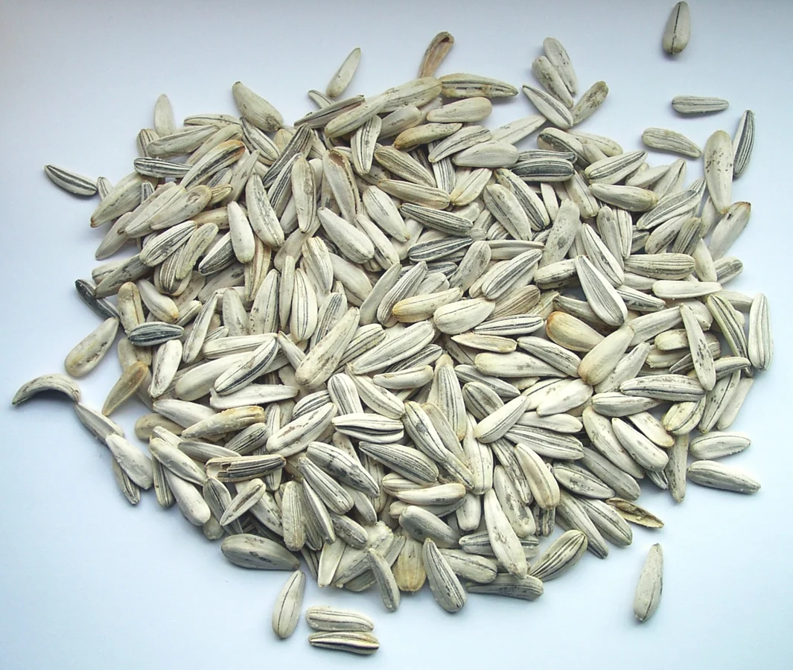

حبة البركة
بذور تُستخدم في التوابل والمخبوزات؛ يتم تأكيد درجة المنتج ومتطلبات التنظيف.
ملف المنتج ↗تصفح البذور والتوابل، والأشكال المتاحة للاستفسار، ومتطلبات التوريد والمواصفات لدى فيردليف.
النقاوة وحجم البذور أو الثمار والشوائب ومواصفة الطحن.
بذور تُستخدم في التوابل والمخبوزات؛ يتم تأكيد درجة المنتج ومتطلبات التنظيف.
ملف المنتج ↗
بذور عطرية للتوابل والمخبوزات ومشروبات الأعشاب.
ملف المنتج ↗
مكوّن للتوابل والأغذية؛ يُحدد المشتري البذور أو الأوراق عند طلب المواصفات.
ملف المنتج ↗
مكوّن عطري بنكهة قريبة من اليانسون؛ يتم تحديد الجزء والشكل المطلوبين.
ملف المنتج ↗
مكوّن معروف في خلطات التوابل؛ يتم تأكيد الشكل التجاري المتاح.
ملف المنتج ↗
بذور للمخبوزات وتصنيع الأغذية؛ يتم تأكيد طريقة التجهيز والدرجة.
ملف المنتج ↗
مكوّن عطري لمشروبات الأعشاب وخلطات نكهات المخبوزات.
ملف المنتج ↗
توابل عطرية لتصنيع الأغذية وخلطات التوابل.
ملف المنتج ↗
بذور للمخبوزات والأغذية؛ تُحدد متطلبات التنظيف والتجهيز.
ملف المنتج ↗
بذور لتصنيع الأغذية؛ يُؤكد الشكل والدرجة.
ملف المنتج ↗
بذور مدرجة في كتالوج فيردليف؛ تُؤكد متطلبات التجهيز والتوريد.
ملف المنتج ↗